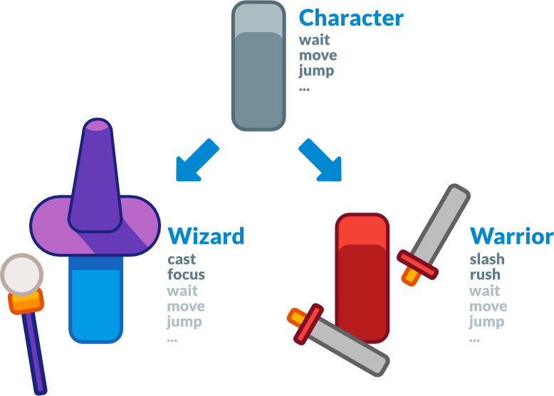
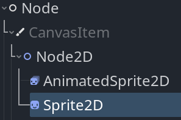
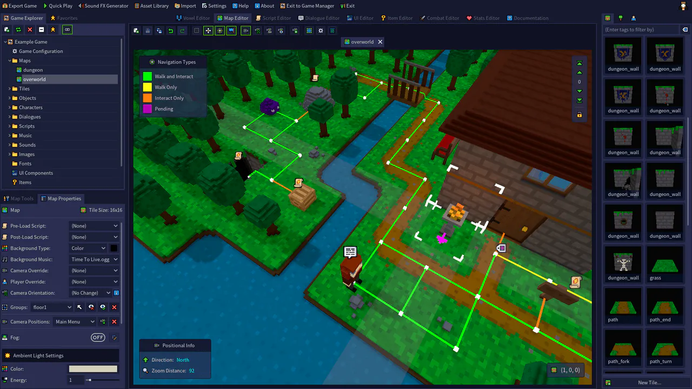

Triết lý thiết kế của Godot
Giờ khi bạn đã làm quen bước đầu, hãy cùng nói về thiết kế của Godot.
Mỗi game engine đều khác nhau và phù hợp với những nhu cầu khác nhau. Chúng không chỉ cung cấp các tính năng khác nhau mà thiết kế của mỗi engine cũng là độc nhất. Điều này dẫn đến các quy trình làm việc khác nhau và những cách khác nhau để xây dựng cấu trúc game của bạn. Tất cả đều bắt nguồn từ triết lý thiết kế riêng của từng engine.
Trang này giúp bạn hiểu cách Godot hoạt động, bắt đầu từ một số trụ cột cốt lõi của nó. Đây không phải là danh sách các tính năng có sẵn, cũng không phải là bài so sánh các engine. Để biết một engine có phù hợp với dự án của bạn hay không, bạn cần tự mình dùng thử và hiểu thiết kế cũng như giới hạn của nó.
Hãy xem video Godot explained in 7 minutes nếu bạn muốn có cái nhìn tổng quan về các tính năng của engine.
Thiết kế hướng đối tượng và tổ hợp
Godot lấy thiết kế hướng đối tượng làm cốt lõi với hệ thống scene linh hoạt và hệ phân cấp Node. Nó cố gắng tránh các mẫu lập trình cứng nhắc để mang lại cách tổ chức game trực quan cho bạn.
Trước hết, Godot cho phép bạn tổ hợp hoặc gộp các scene. Nó giống như prefab lồng nhau: bạn có thể tạo một scene BlinkingLight và một scene BrokenLantern sử dụng BlinkingLight. Sau đó, tạo một thành phố đầy BrokenLantern. Đổi màu của BlinkingLight, lưu lại, và tất cả BrokenLantern trong thành phố sẽ cập nhật ngay lập tức.
Hơn thế nữa, bạn có thể kế thừa từ bất kỳ scene nào.
Một scene trong Godot có thể là Weapon, Character, Item, Door, Level, một phần của màn chơi… bất cứ thứ gì bạn muốn. Nó hoạt động giống như một lớp trong code thuần, chỉ khác là bạn được tự do thiết kế nó bằng trình chỉnh sửa, chỉ bằng code, hoặc kết hợp cả hai.
Nó khác với prefab mà bạn thấy ở nhiều engine 3D, vì sau đó bạn có thể kế thừa và mở rộng các scene đó. Bạn có thể tạo một Magician mở rộng từ Character. Sửa Character trong trình chỉnh sửa và Magician cũng sẽ được cập nhật theo. Điều này giúp bạn xây dựng dự án sao cho cấu trúc của nó khớp với thiết kế của game.

Cũng lưu ý rằng Godot cung cấp nhiều loại đối tượng khác nhau gọi là node, mỗi loại có một mục đích cụ thể. Các node là một phần của cây và luôn kế thừa từ lớp cha của chúng cho đến lớp Node. Mặc dù engine có một số node như hình dạng va chạm được dùng bởi một physics body cha, hầu hết các node đều hoạt động độc lập với nhau.
Nói cách khác, node của Godot không hoạt động giống như component trong một số game engine khác.

Sprite2D là một Node2D, một CanvasItem và một Node. Nó có tất cả thuộc tính và tính năng của ba lớp cha, như transform hay khả năng vẽ hình dạng tùy chỉnh và kết xuất với shader tùy chỉnh.
Gói trọn gói
Godot cố gắng cung cấp công cụ riêng để đáp ứng hầu hết các nhu cầu phổ biến. Nó có không gian làm việc riêng cho việc viết script, trình chỉnh sửa hoạt ảnh, trình chỉnh sửa tilemap, trình chỉnh sửa shader, trình gỡ lỗi, trình profiler, khả năng hot-reload cục bộ và trên thiết bị từ xa, v.v.

Mục tiêu là cung cấp một bộ công cụ trọn gói để làm game và một trải nghiệm người dùng liền mạch. Bạn vẫn có thể làm việc với các chương trình bên ngoài, miễn là Godot có plugin import tương ứng.
Đó cũng là một phần lý do Godot cung cấp ngôn ngữ lập trình riêng GDScript bên cạnh C#. GDScript được thiết kế cho nhu cầu của lập trình viên game và nhà thiết kế game, đồng thời được tích hợp chặt chẽ vào engine và trình chỉnh sửa.
GDScript cho phép bạn viết code bằng cú pháp dựa trên thụt lề, nhưng vẫn nhận diện kiểu và mang lại chất lượng tự động hoàn thành như ngôn ngữ tĩnh. Nó cũng được tối ưu cho code gameplay với các kiểu tích hợp sẵn như Vector và Color.
Lưu ý rằng với GDExtension, bạn có thể viết code hiệu năng cao bằng các ngôn ngữ biên dịch như C, C++, Rust, D, Haxe hoặc Swift mà không cần biên dịch lại engine.
Lưu ý rằng workspace 3D không có nhiều công cụ như workspace 2D. Bạn sẽ cần các chương trình bên ngoài hoặc addon để chỉnh sửa địa hình, tạo hoạt ảnh cho nhân vật phức tạp, v.v. Godot cung cấp một API hoàn chỉnh để mở rộng chức năng của trình chỉnh sửa bằng code game. Xem The Godot editor is a Godot game bên dưới.
Mã nguồn mở
Godot cung cấp toàn bộ mã nguồn mở theo giấy phép MIT. Điều này có nghĩa là bất kỳ ai cũng có thể tự do tải về, sử dụng, sửa đổi hoặc chia sẻ mã nguồn, miễn là giữ nguyên tệp giấy phép.
Mọi công nghệ đi kèm với Godot, kể cả thư viện bên thứ ba, đều phải tương thích về mặt pháp lý với giấy phép mã nguồn mở này. Vì vậy, phần lớn Godot được các cộng tác viên trong cộng đồng phát triển từ đầu.
Bất kỳ ai cũng có thể gắn thêm các công cụ độc quyền cho nhu cầu dự án của mình — chỉ là chúng sẽ không được phát hành kèm engine. Ví dụ như Google AdMob hoặc FMOD. Thay vào đó, bất kỳ công cụ nào trong số này đều có thể có dưới dạng plugin bên thứ ba.
Mặt khác, mã nguồn mở nghĩa là bạn có thể thoải mái học hỏi từ engine và mở rộng nó tùy thích. Bạn cũng có thể gỡ lỗi game dễ dàng, vì Godot sẽ in lỗi kèm stack trace, ngay cả khi lỗi đến từ chính engine.
Ghi chú
Điều này không ảnh hưởng gì đến công việc bạn làm với Godot: không có ràng buộc nào đối với engine hay bất cứ thứ gì bạn tạo ra bằng nó.
Do cộng đồng dẫn dắt
Godot được tạo ra bởi cộng đồng, cho cộng đồng và cho tất cả những người làm game. Chính nhu cầu của người dùng và các cuộc thảo luận mở là động lực cho những cập nhật cốt lõi. Các tính năng mới từ các lập trình viên cốt lõi thường ưu tiên những gì mang lại lợi ích cho nhiều người dùng nhất.
Dù vậy, mặc dù chỉ có một số ít lập trình viên cốt lõi làm việc toàn thời gian, dự án có hàng nghìn người đóng góp tại thời điểm viết bài. Những lập trình viên thiện nguyện làm các tính năng mà có thể chính họ cũng cần, vì vậy bạn sẽ thấy cải tiến ở mọi ngóc ngách của engine cùng lúc trong mỗi bản phát hành lớn.
Trình chỉnh sửa Godot là một game Godot
Trình chỉnh sửa Godot chạy trên chính game engine. Nó dùng hệ thống UI của engine, có thể hot-reload code và scene khi bạn thử nghiệm dự án, hoặc chạy code game trong trình chỉnh sửa. Điều này có nghĩa là bạn có thể dùng cùng một code và scene cho game của mình, hoặc xây dựng plugin và mở rộng trình chỉnh sửa.
Điều này mang lại một hệ thống UI đáng tin cậy và linh hoạt, vì nó vận hành chính trình chỉnh sửa. Với annotation @tool, bạn có thể chạy bất kỳ code game nào trong trình chỉnh sửa.

RPG in a Box là một trình chỉnh sửa RPG voxel được làm bằng Godot. Nó dùng các công cụ UI của Godot cho hệ thống lập trình dựa trên node và cho phần còn lại của giao diện.
Đặt annotation @tool ở đầu bất kỳ file GDScript nào và nó sẽ chạy trong trình chỉnh sửa. Điều này cho phép bạn import và export plugin, tạo plugin như trình chỉnh sửa màn chơi tùy chỉnh, hoặc tạo script với cùng các node và API mà bạn dùng trong dự án.
Ghi chú
Trình chỉnh sửa được viết hoàn toàn bằng C++ và được biên dịch tĩnh vào file nhị phân. Điều này có nghĩa là bạn không thể import nó như một dự án thông thường có file project.godot.
Engine 2D và 3D tách biệt
Godot cung cấp các engine kết xuất 2D và 3D riêng biệt. Do đó, đơn vị cơ bản cho scene 2D là pixel. Mặc dù các engine tách biệt, bạn vẫn có thể kết xuất 2D trong 3D, 3D trong 2D, và phủ sprite cũng như giao diện 2D lên thế giới 3D của mình.